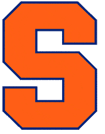

Atlantic Hockey America

SyracuseSyracuse is 8-3-0 and 18th in the NPI. Across 500 simulated seasons its median NPI finish is 15th, with a 95% range of 9th to 23rd. ELO expects about 5 wins in the next 10.
Next 10 games
- Sat, Nov 7
 at Lindenwood74%
at Lindenwood74% - Fri, Nov 13
 at RPI80%
at RPI80% - Sat, Nov 14vs RPI88%
- Tue, Nov 17
 vs Colgate44%
vs Colgate44% - Fri, Nov 20
 vs RIT80%
vs RIT80% - Sat, Nov 21at RIT69%
- Tue, Nov 24
 vs Clarkson43%
vs Clarkson43% - Sat, Nov 28at Clarkson30%
- Fri, Dec 4
 at Penn State17%
at Penn State17% - Sat, Dec 5at Penn State17%
Win chances from ELO; the dot is stronger the more lopsided the game.
Projected NPI finish
500 simulated seasons, remaining games decided by ELO win chances. Dashed line: median. Shaded: 95% range.